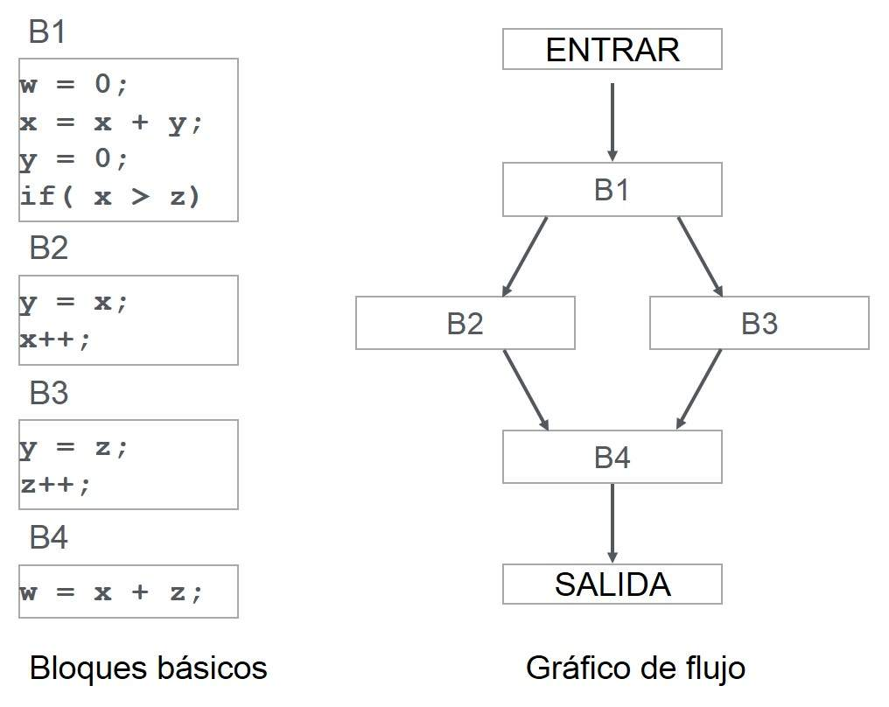

Criterios de Optimización Independiente en Compiladores
La optimización independiente se refiere a un conjunto de técnicas de optimización de código que se aplican sin tener en cuenta la arquitectura o características específicas del ordenador objetivo. Estas técnicas se centran en mejorar la estructura y eficiencia del código fuente en general, sin depender de las características del hardware en el que se ejecutará el programa.

Objetivos de la Optimización Independiente:
Los principales objetivos de la optimización independiente son:
- Reducir el tamaño del código: Eliminar código redundante o innecesario para generar un programa más compacto y eficiente.
- Mejorar la legibilidad del código: Simplificar la estructura del código para que sea más fácil de leer y comprender por los desarrolladores.
- Aumentar la velocidad de ejecución: Aplicar técnicas que mejoren la eficiencia del código, como la eliminación de operaciones innecesarias o la reordenación de instrucciones.
Técnicas de Optimización Independiente:
Algunas de las técnicas de optimización independiente más comunes incluyen:
- Eliminación de código redundante: Identificar y eliminar código que se ejecuta varias veces sin necesidad, reduciendo el tamaño y mejorando la eficiencia del programa.
- Simplificación de expresiones: Simplificar expresiones matemáticas y lógicas para mejorar su eficiencia y reducir el número de operaciones necesarias.
- Reordenamiento de instrucciones: Reordenar las instrucciones del programa para mejorar el flujo de ejecución y optimizar el uso de recursos del procesador.
- Eliminación de variables muertas: Eliminar variables que ya no se utilizan en el programa, liberando espacio en la memoria y mejorando la eficiencia del código.
- Propagación de constantes: Reemplazar expresiones que se evalúan siempre con el mismo valor constante por el valor constante en sí, reduciendo el número de operaciones necesarias.
Ejemplo de Optimización Independiente:
Consideremos el siguiente código C:
int x = 10;
int y = x + 5;
int z = y + 10;
La optimización independiente podría transformar este código en:
int x = 10;
int z = x + 15;
En este ejemplo, se ha eliminado la variable y y se ha simplificado la expresión y + 10 reemplazándola por x + 15, ya que x es una constante.
Ventajas de la Optimización Independiente:
La optimización independiente ofrece varias ventajas:
- Aplicabilidad general: Las técnicas de optimización independiente son aplicables a una amplia gama de lenguajes de programación y arquitecturas de ordenador.
- Facilidad de implementación: Las técnicas de optimización independiente suelen ser relativamente fáciles de implementar en los compiladores.
- Mejora de la portabilidad: Un código optimizado independientemente puede ejecutarse de manera eficiente en diferentes plataformas sin necesidad de modificaciones específicas.
Desventajas de la Optimización Independiente:
La optimización independiente también presenta algunas desventajas:
- Potencial limitado: Las técnicas de optimización independiente pueden no ser tan efectivas como las técnicas de optimización dependiente que consideran las características específicas del hardware.
- Aumento del tiempo de compilación: La aplicación de técnicas de optimización independiente puede aumentar el tiempo de compilación del programa.
La optimización independiente es una parte importante del proceso de compilación, ya que permite mejorar la estructura, eficiencia y legibilidad del código fuente sin depender de la arquitectura del ordenador objetivo. Las técnicas de optimización independiente son relativamente fáciles de implementar y ofrecen una amplia aplicabilidad, lo que las convierte en una herramienta valiosa para los desarrolladores de compiladores.